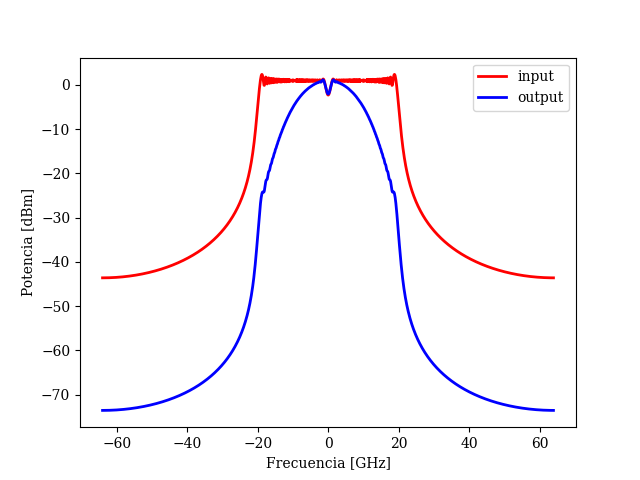

opticomlib.devices.LPF
- opticomlib.devices.LPF(input: ndarray | electrical_signal, BW: float, n: int = 4, fs: float | None = None)[source]
Low Pass Filter (LPF) for electrical signals. Filters the input electrical signal, allowing only the desired frequency band to pass. Bessel filter model.
- Parameters:
input (ndarray | electrical_signal) – Electrical signal to be filtered.
BW (float) – Filter bandwidth or cutoff frecuency, in [Hz].
n (int, optional) – Filter order (default: 4).
fs (float, optional) – Sampling frequency of the input signal (default: globals_vars.fs).
- Returns:
Filtered electrical signal.
- Return type:
- Raises:
TypeError – If
inputis not of type ndarray or electrical_signal.
Example
>>> from opticomlib.typing import electrical_signal, global_vars >>> from opticomlib.devices import LPF >>> >>> import numpy as np >>> >>> global_vars(N = 10, sps=128, R=1e9) >>> >>> t = global_vars.t >>> c = 20e9/t[-1] # frequency chirp from 0 to 20 GHz >>> >>> input = electrical_signal( np.sin( np.pi*c*t**2) ) >>> output = LPF(input, 10e9) >>> >>> input.psd('r', label='input', lw=2) >>> output.psd('b', label='output', lw=2).show()